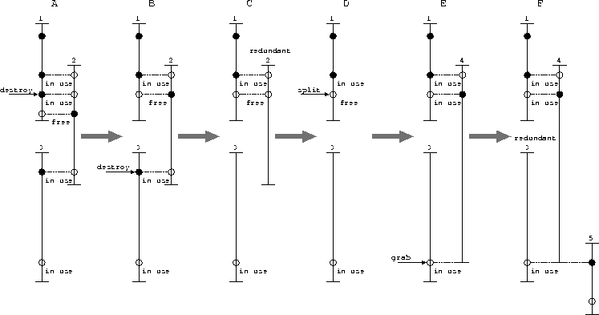

Next: ArenaInitialBlock Class
Up: Arena Class
Previous: Mapping
As described in the Section 2.5, Windows may overlap
and some chunks may be fragmented. The map operation must decide
the suitable ranges of the Windows when they are mapped.
There are several operations for handling these situations.
- The isRedundant()
- private operation checks whether the
specified Window is redundant or not. A Window is redundant when
all the chunks in it is redundant. A chunk is redundant on condition that
the three conditions of the chunk will not be violated without it. The first
condition is that the chunk is also mapped in another Window. The
second condition is that the chunk will not become fragmented without it.
The third condition is that the chunk is neither grabbed nor
read-only-grabbed.
- The updateFragmentedFlags()
- private operation checks whether
the fragmentation flag of each chunk in the specified Window must be
set or not, and modifies them, if any.
- The removeRedundantWindow()
- private operation removes the
Window at the specified offset if it is redundant. The operation then
calls the updateFragmentedFlags() operation for the immediate
Windows.
Figure 3.14:
Overlapped Windows and Redundancy
|  |
In the Figure 3.14, a sample of Window operations is shown.
The circles represent the chunks in the Windows. The circle is filled
if not fragmented.
In the state A, three overlapped Windows are mapped and a
destruction of a chunk is requested. The order of the mappings is 1, 2, then
3.
In the state B, the destruction is completed and one chunk is removed.
The just destroyed chunk becomes freed and fragmented. Another destruction
of a chunk is requested.
In the state C, the destruction is completed and the Window 2
becomes redundant.
In the state D, the redundant Window is removed. A split
operation on a chunk is requested.
In the state E, a new Window is created for the newly allocated
chunk. The split operation has not split the chunk. A grabbing of a chunk
is requested.
In the state F, another new Window is created for mapping the
chunk. The Window 3 becomes redundant owing to the new Window.
Next: ArenaInitialBlock Class
Up: Arena Class
Previous: Mapping
Mori Tetsuya / t2y3141592@gmail.com